3: Exploratory Factor Analysis
- start thinking about factor analysis as a model of the underlying constructs that explain variability in the variables that we observe
- learn about ‘rotations’ as a way to transform factors in order to be able to provide a clearer interpretation of what those factors represent
- all of the different parts of the EFA output in R
From pure dimension reduction to EFA
Most of our introduction to dimension reduction in Chapter 1 was conceptually similar to the process of Principal Component Analysis (PCA) (Chapter 2) - the simplest analogy here is to take a real three-dimensional object in your hands (like your phone, for instance), and measure it with two perpendicular dimensions (like its width and height).
This is going to be our starting point for the more commonly used method in psychology - Factor Analysis (FA). These two methods are very similar to one another, so much so that distinction between the two can get a little blurred (a lot of it just depends on our goals - see Chapter 1 #the-key-methods). Ultimately they are both methods aimed to get at the dimensions that capture “variability” in the data.
It’s important to think about what we mean by “variability” here - it is variability across a whole set of variables. So if we start with just 3 variables, we can think of all the data visualised in 3-dimensional space. We can see in Figure 1 that the observations vary in all variables. But they vary in a specific way - observations that are high on one tend to be higher on the others. Observations that are lower, tend to be lower on all of them.
The methods we are looking at now are concerned with capturing this variability in fewer “dimensions” - i.e., without having to refer to all variables “Mental Fatigue”,“Physical Fatigue”, and “Sleepiness”, couldn’t we instead simply say that an observation is high/low on the dimension of ‘tiredness’.
Where Principal Component Analysis (PCA) aims to summarise a set of measured variables into a smaller set of orthogonal (uncorrelated) dimensions, Factor Analysis (FA) is more of an explanatory tool, in that we are assuming that the relationships between a set of measured variables can be explained by a number of underlying dimensions, or “latent factors”. This distinction is a little subtle, but essentially as soon as we start to give meaning to the new dimensions, we are in the world of factor analysis.
| Principal Component Analysis | Factor Analysis | |
|---|---|---|
| what it does | take a set of correlated variables, reduce to a set of orthogonal dimensions that sequentially capture most variability | take a set of correlated variables, ask what set of dimensions (not necessarily orthogonal!) explain variability |
| what the new dimensions are | new dimensions are referred to as “components” - they are simply “composites” and do not necessarily exist | new dimensions are referred to as “factors”. They are assumed to be underlying latent variables that are the cause of why people have different scores on the observed variables |
| example | Socioeconomic status (SES) might be a composite measure of family income, parental education, etc. If my SES increases, that doesn’t mean my parents suddenly get more education (it’s the other way around) | Anxiety (the unmeasurable construct) is a latent factor. My underlying anxiety is what causes me to respond “strongly agree” to “I am often on edge” |
Thinking in diagrams
One way to think about this is to draw the two approaches in diagrammatic form, mapping the relationships between variables. There are conventions for these sort of diagrams:
- squares = variables we observe
- circles = variables we don’t observe
- single-headed arrows = regression paths (pointed at outcome)
- double-headed arrows = correlation
In the diagrams below, note how the directions of the arrows are different between PCA and FA - in PCA, each component \(C_i\) is the weighted combination of the observed variables \(y_1, ...,y_n\), whereas in FA, each measured variable \(y_i\) is seen as generated by some latent factor(s) \(F_i\) plus some unexplained variance \(u_i\).
PCA as a diagram
Note that the idea of a ‘composite’ requires us to use a special shape (the hexagon), but many people would just use a square.
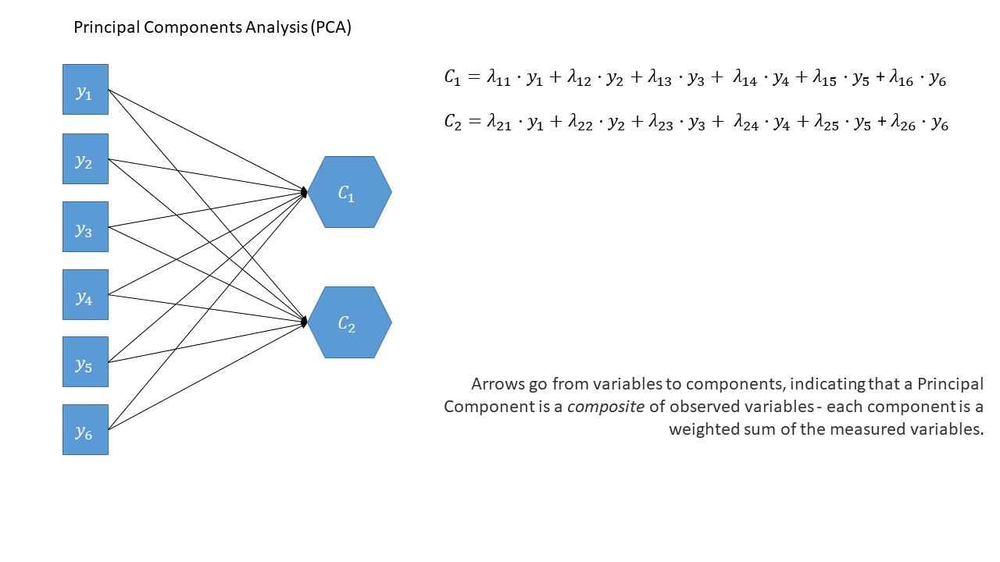
optional: PCA in full
Principal components sequentially capture the orthogonal (i.e., perpendicular) dimensions of the dataset with the most variance. The data reduction comes when we retain fewer components than we have dimensions in our original data. So if we were being pedantic, the diagram for PCA would look something like the diagram below.
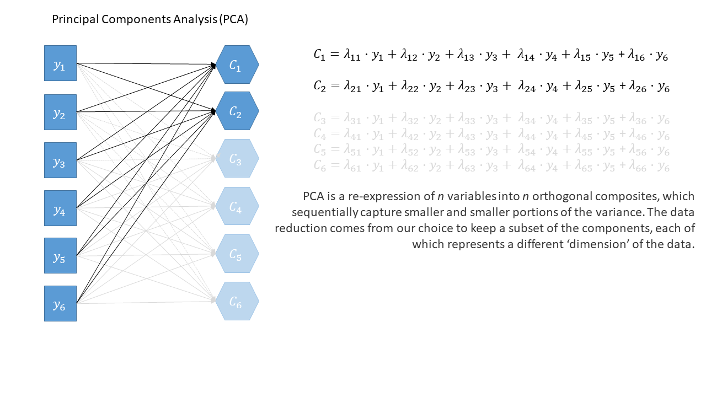
EFA as a diagram
Exploratory Factor Analysis as a diagram has arrows going from the factors to the observed variables. Unlike PCA, we also have ‘uniqueness’ factors for each variable, representing the various stray causes that are specific to each variable. Sometimes, these uniqueness are represented by an arrow only, but they are technically themselves latent variables, and so can be drawn as circles.
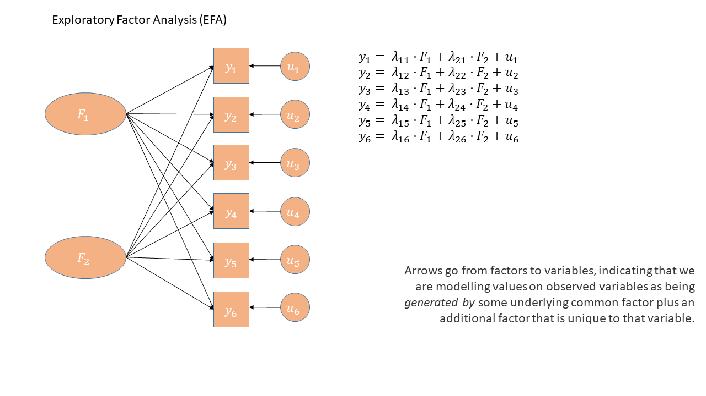
It might help to read the \(\lambda\)s as beta-weights (\(b\), or \(\beta\)), because that’s all they really are. The equation \(y_i = \lambda_{1i} F_1 + \lambda_{2i} F_2 + u_i\) is just our way of saying that the variable \(y_i\) is the manifestation of some amount (\(\lambda_{1i}\)) of an underlying factor \(F_1\), some amount (\(\lambda_{2i}\)) of some other underlying factor \(F_2\), and some error (\(u_i\)). It’s just a set of regressions!
Exploratory Factor Analysis
The “Exploratory” in Exploratory Factor Analysis reflects that we are not wanting to test any specific hypothesis about the structure of the dimensions underlying our variables. Instead, we are interested in discovery of that structure.
Consider extending our example of tiredness to a situation in which we ask people to rate agreement on 10 statements:
- I find it difficult to concentrate on mentally demanding tasks.
- I feel mentally drained after cognitive work.
- I am experiencing mental exhaustion or “brain fog.”
- It takes significant effort for me to think clearly.
- My muscles feel tired even without physical activity.
- I feel physically drained and lacking energy.
- My limbs feel heavy or weak.
- Simple physical tasks would require considerable effort.
- I would likely fall asleep if sitting quietly right now.
- I have a strong urge to lie down and rest.
Initially you might be happy to think “these questions all ask about just one thing - being tired”, but then you might also on reflection feel that some subset of the questions are slightly more similar to one another than to others (e.g., the first 4 seem like they are getting at something slightly different from the next 4, and final 2 seem possibly different again). Exploratory Factor Analysis can help us to understand if our set of 10 questions is “unidimensional”, or whether there are actually two (or more) “subdimensions” to the questionnaire.
This technique will help us better understand a) what exactly it is that we’ve measured, and b) how we can create composite score(s) (i.e. can we give everybody just 1 score, or do we really need a number of scores - one for each dimension?)
The process of EFA (you don’t need to understand everything here immediately—it’ll make more sense after we see it in action):
- check suitability of items (“items” is often used to refer to the set of measured variables in a questionnaire)
- decide on appropriate rotation and factor extraction method
- examine plausible number of factors
- based on the plausible number of factors from (3), choose the range to examine from \(n_{min}\) factors to \(n_{max}\) factors
- do EFA, extracting from \(n_{min}\) to \(n_{max}\) factors. Compare each of these ‘solutions’ in terms of structure, variance explained, and — by examining how the factors from each solution relate to the observed items — assess how much theoretical sense they make.
- if the aim is to develop a measurement tool for future use - consider removing “problematic” items and start over again.
EFA in R
The code to perform an EFA is very straightforward. It’s just one line:
library(psych)
my_efa <- fa(data, nfactors = ?? , rotate = ??, fm = ??)The first two things we’re giving the fa() function are straightforward - we give it the dataset and we tell it how many factors we want.
The latter two things - rotate and fm, are a bit more involved.
Before we get to them, we’ll take our first look at the output of fa(). We’ll go into this in a lot more detail later on, but for now, all we need to really get our heads around is that there are two main bits to the output: the relationships between each item and each factor (“loadings”), and the variance explained by each factor.
Below, we have data on our 10 questions about tiredness, and we have extracted two factors:
my_efa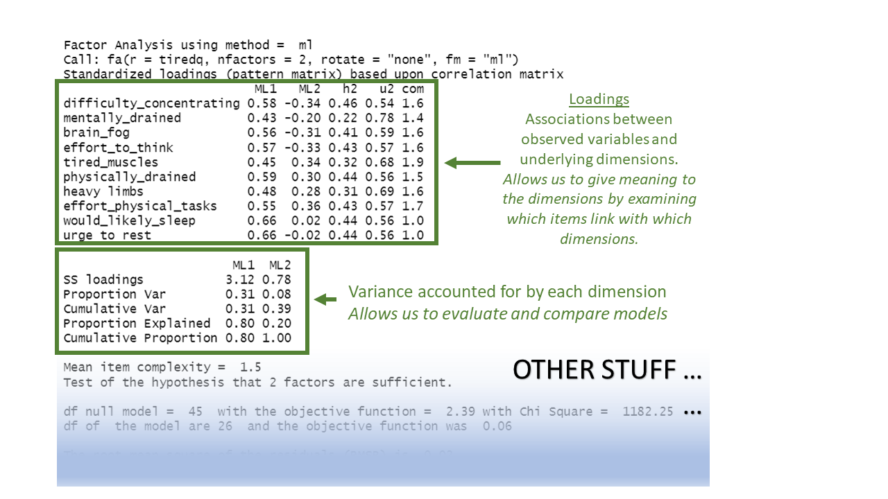
Model based thinking
It’s worth noting that exploratory factor analysis is a model-based approach to dimension reduction. This differs subtly from something like PCA which is more like a calculation or ‘re-expression’.
At a very broad level, most of statistical modelling is of the form:
\[ \text{Outcome} = \text{Model} + \text{Error} \]
Typically with methods we have looked at before such as lm() and lmer(), the “outcome” was a vector of everybody’s values on an outcome variable, which we predict (or ‘model’) based on the values on a set of explanatory variables.
What changes when we do factor analysis is that our “outcome” is going to be a correlation matrix. This correlation matrix represents how the items that we’ve collected data for are correlated with one another.
optional: what’s “correlation” again?
Just like standard deviations are a standardised version of variance, you can think of correlations as a standardised version of covariance. Correlations are standardised to only take on values between –1 and 1, no matter what the original scale of the data was.
optional: what’s “covariance” again?
Intuition:
You can think of the covariance of Item A and Item B as follows: If you already know the values of Item A, how well can you guess the values of Item B?
- If responses to Item B are generally high when responses to Item A are also high, then the two items have positive covariance.
- If responses to Item B are generally low when responses to Item A are high, then the two items have negative covariance.
- If responses to Item B are all over the place when responses to Item A are high, then the two items have near-zero covariance.
Concretely:
Let’s look back at our data on mental fatigue (M), physical fatigue (P), and sleepiness (S). We’ll plot physical fatigue against mental fatigue.
mydata |>
ggplot(aes(x = P, y = M)) +
geom_point()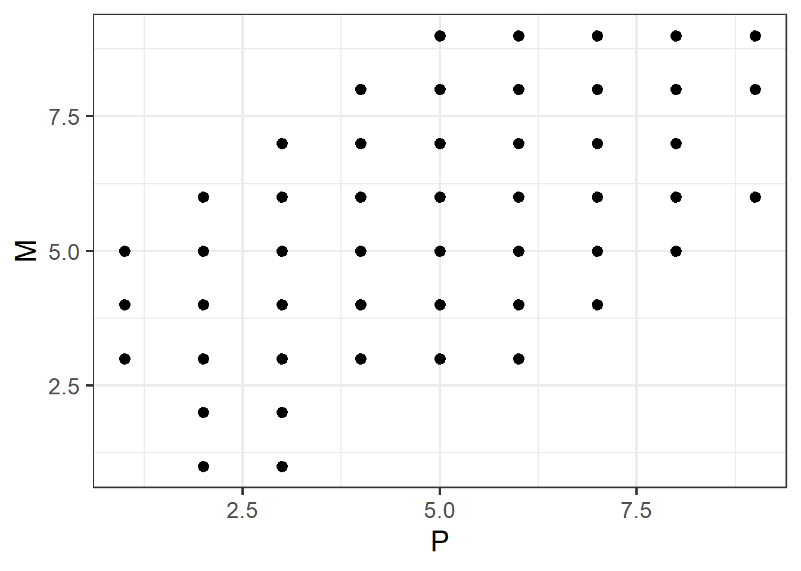
This plot shows a positive association:
- small P co-occurs with small M, and not with large M;
- large P co-occurs with large M, and not with small M.
In other words: if you’ve observed a high value of P, you can be fairly confident that you’ll also observe a high value of M. This suggests that P and M co-vary in the positive direction.
Let’s check.
cov(mydata$P, mydata$M)[1] 1.437868Yes! The covariance is positive.
How do we show the covariance of more than two variables?
The original data on mental fatigue (M), physical fatigue (P), and sleepiness (S) has three variables, not just the two we plotted above. If we wanted to report the covariance of all of those variables with one another, we could tediously write out sentences (which would get even more tedious as the number of pairs of variables increases):
- “Mental fatigue and physical fatigue have a covariance of 1.4.”
- “Mental fatigue and sleepiness have a covariance of 1.6.”
- “Physical fatigue and sleepiness have a covariance of 1.7.”
More succinctly, though, we can represent all combinations of variables as a table, where each row and each column represent one variable:
| M | P | S | |
|---|---|---|---|
| M | cov(M, M) = var(M) |
cov(M, P) |
cov(M, S) |
| P | cov(P, M) |
cov(P, P) = var(P) |
cov(P, S) |
| S | cov(S, M) |
cov(S, P) |
cov(S, S) = var(S) |
Filled in with the actual covariance numbers, we get:
| M | P | S | |
|---|---|---|---|
| M | 2.3 | 1.4 | 1.6 |
| P | 1.4 | 2.6 | 1.7 |
| S | 1.6 | 1.7 | 1.9 |
A couple things to notice here:
- The covariance of a variable with itself is the same as that variable’s variance. That’s what we get on the top-left-to-bottom-right diagonal of this table.
- So, a covariance table like this has an added benefit of showing us each variable’s variance too.
- The order in which we name the items doesn’t matter. The covariance of mental fatigue with sleepiness is the same as the covariance of sleepiness with mental fatigue.
We can use R to get the covariance matrix for this data as follows, rounded to one decimal place for ease:
cov(mydata) |> round(1) M P S
M 2.3 1.4 1.6
P 1.4 2.6 1.7
S 1.6 1.7 1.9To look at the correlations between multiple variables in a dataset—for example, the tiredness data from before, with mental fatigue (M), physical fatigue (P), and sleepiness (S)—we can show all possible pairs of variables in a table, where each row and each column represent one variable:
| M | P | S | |
|---|---|---|---|
| M | cor(M, M) |
cor(M, P) |
cor(M, S) |
| P | cor(P, M) |
cor(P, P) |
cor(P, S) |
| S | cor(S, M) |
cor(S, P) |
cor(S, S) |
Filled in with the actual correlations, we get:
| M | P | S | |
|---|---|---|---|
| M | 1.0 | 0.6 | 0.7 |
| P | 0.6 | 1.0 | 0.8 |
| S | 0.7 | 0.8 | 1.0 |
In the diagonal from the top left to the bottom right, we see a bunch of 1.0s. A 1 represents a perfect correlation, which should make some sense—each variable is perfectly correlated with itself.
Maths people will call a table of numbers a “matrix”. And when the numbers represent the correlations between a bunch of variables, we’re dealing with a “correlation matrix”.
We can use R to get the correlation matrix for this data as follows, rounded to one decimal place for ease:
cor(mydata) |> round(1) M P S
M 1.0 0.6 0.7
P 0.6 1.0 0.8
S 0.7 0.8 1.0The goal of an EFA model is to figure out what factors might underlie our data. It maps each item we observe onto each of the factors that we tell the model to find. The associations between each item and the factor are called “factor loadings”. The “model” is going to be some function of our factor loadings, and the “error” is going to be the ‘how far off is the model from the outcome?’
Let’s make this a bit more concrete. In the tiredness example from above, we have ten observed variables, so our correlation matrix would be 10x10: ten rows by ten columns. But to keep things reasonable, we’ll look at an example below with just three observed variables, meaning that we have a 3x3 correlation matrix.
In our example with the 3x3 correlation matrix, we’ve decided that we’ll model these items with just one factor. Our three variables each have one loading onto the single factor, so our model is represented by three numbers: the loadings of each variable onto the factor. We’re using the symbol \(\mathbf{\Lambda}\), which is a capital lambda, to denote those three numbers.
(If you’ve never encountered linear algebra before, don’t worry about how exactly the following maths happens. The equations are included for those who are interested—if you’re not interested, that’s OK. The maths is not essential for you to know.)
We multiply those three numbers \(\mathbf{\Lambda}\) by themselves in such a way that the outcome is a 3x3 matrix.1 This matrix is close but not quite identical to our observed correlation matrix. The difference between the model matrix and the correlation matrix is the uniqueness matrix, represented by \(\mathbf{\Psi}\), a capital psi (pronounced like “sigh”). The uniqueness matrix contains the “error”, the variance that’s unique to each observed item (whether because the item is different in some way than the others, or because there’s measurement error associated with that item, or both—examples of this coming up below).
\[ \begin{align} \color{red} \text{Outcome} &= \color{blue} \text{Model}\, +\, \color{magenta} \text{Error} \\ \quad \\ \color{red} \text{Correlation Matrix} &= \color{blue} \text{Factor Loadings}^2 \,+\, \color{magenta} \text{Uniqueness} \\ \quad \\ \color{red} \mathbf{\Sigma} &= \color{blue} \mathbf{\Lambda}\mathbf{\Lambda'} \,+\, \color{magenta} \mathbf{\Psi} \\ \quad \\ \color{red} \begin{bmatrix} 1 & 0.22 & 0.44 \\ 0.22 & 1 & 0.35 \\ 0.44 & 0.35 & 1 \\ \end{bmatrix} &= \color{blue} \begin{bmatrix} 0.520 \\ 0.415 \\ 0.854 \\ \end{bmatrix} \begin{bmatrix} 0.520 & 0.415 & 0.854 \\ \end{bmatrix} \,+\, \color{magenta} \begin{bmatrix} 0.73 & 0 & 0 \\ 0 & 0.83 & 0 \\ 0 & 0 & 0.27 \\ \end{bmatrix} \\ \quad \\ &= \color{blue} \begin{bmatrix} 0.27 & 0.22 & 0.44 \\ 0.22 & 0.17 & 0.35 \\ 0.44 & 0.35 & 0.73 \\ \end{bmatrix} \,+\, \color{magenta} \begin{bmatrix} 0.73 & 0 & 0 \\ 0 & 0.83 & 0 \\ 0 & 0 & 0.27 \\ \end{bmatrix} \\ \end{align} \]
Suppose our three variables were all questions about anxiety. For agreement with a statement like like “I struggle to say still and am often fidgeting”, people will vary in their responses due to 1) their level of anxiety, 2) their general fidgeting behaviours that are separate from their anxiety, and 3) measurement error (responses of “agree” and “strongly agree” are very inexact measurements here!)
Factor analysis is concerned with the first of these - the variance shared across multiple items. So a way to think of the factor model is as trying to separate out common variance from unique variance (which could be ‘true’ variability or just error):
\[ \begin{equation} var(\text{total}) = var(\text{common}) + var(\text{specific}) + var(\text{error}) \end{equation} \]
| common variance | variance shared across items | true and shared |
| specific variance | variance specific to an item that is not shared with any other items | true and unique |
| error variance | variance due to measurement error | not ‘true’, unique |
Factor extraction methods
In EFA, the process of identifying how our variables map onto some number of factors is called “factor extraction”. It’s like how, in linear modelling, the process of identifying the values of the intercept and the slope is called “coefficient estimation”. In linear modelling, we also saw that there are a few different ways to estimate coefficients—for example, using different optimisers. And similarly, in EFA, there are a few different ways to extract factors.
We’re not going to delve too much into factor extraction methods here, beyond mentioning the top three choices below and when you might use them. The main contenders are Maximum Likelihood (ml), Minimum Residuals (minres) and Principal Axis Factoring (paf).2
Maximum Likelihood has the benefit of providing standard errors and fit indices that are useful for model testing, but the disadvantage is that it is sensitive to violations of normality, and can sometimes fail to converge, or produce solutions with impossible values such as factor loadings >1 (known as “Heywood cases”), or factor correlations >1.
Minimum Residuals (minres) and Principal Axis Factoring (paf) will both work even when maximum likelihood fails to converge, and are slightly less susceptible to deviations from normality. They are a bit more sensitive to the extent to which the observed variables share variance with one another.
You can find a lot of discussion about different methods both in the help documentation for the fa() function from the psych package, and there are lots of discussions both in papers and on forums. This is a complicated issue, but when you have a large sample size, a large number of items, for which each has a similar amount of shared variance, then the extraction methods tend to agree. Don’t fret too much about the factor extraction method.
Rotations
A much more conceptual part of factor analysis that we need to devote some time to is the idea of “rotations”.
Think back to scaling predictors in a linear model, or choosing different contrast coding schemes. If we convert a continuous predictor to z-scores, or choose between dummy coding or effect coding for a categorical predictor, then all that will change between versions of the model is the model’s coefficients. The data itself does not change, and crucially, the predictions that the model makes (e.g., if you use predict() or emmeans()) also do not change. All that changes is the model’s internal representation of things.
In a similar way, in EFA, we can transform the set of relationships between measured variables and factors (i.e., transform the set of loadings) without changing what the model predicts.3
Transforming predictors is about interpretation: transforming predictors can make the model’s coefficients easier to interpret. In linear modelling, we might choose effect coding instead of dummy coding because we want to compare one group to the grand mean, rather than comparing one group to another group. In a similar way, to make factor loadings easier to interpret, we may wish to rotate them.
Let’s return to our tiredness example, where we had ten questions about tiredness and extracted two factors. (Notice that the factor extraction method used here is “ml”, maximum likelihood.) Based on the factor loadings, which in principle can range from –1 to 1, how would we interpret the dimensions represented by the first factor (ML1) and the second factor (ML2)?
tiredq <- read_csv("https://uoepsy.github.io/data/tiredq.csv")
tired_fa1 <- fa(tiredq, nfactors=2, rotate = "none", fm="ml")
print(tired_fa1$loadings, cutoff = .3)
Loadings:
ML1 ML2
difficulty_concentrating 0.526 -0.355
mentally_drained 0.484
brain_fog 0.525
effort_to_think 0.570 -0.365
tired_muscles 0.454
physically_drained 0.560 0.320
heavy limbs 0.516 0.320
effort_physical_tasks 0.467 0.333
would_likely_sleep 0.622
urge to rest 0.600
ML1 ML2
SS loadings 2.863 0.790
Proportion Var 0.286 0.079
Cumulative Var 0.286 0.365(Some of the cells in the table are blank. They’re not shown because they contain loadings that are close enough to zero that we deem them uninteresting. We defined our near-zero cutoff at 0.3. So only loadings more negative than –0.3 or more positive than 0.3 are shown.)
The first factor is associated fairly highly with all 10 variables. So maybe it represents a the construct of “general fatigue”?
The second factor is even less clear. It only has loadings above 0.3 for three items: it’s negatively associated with mental fatigue, and positively associated with physical fatigue. The resulting concept is kind of awkward to describe: at one end of this factor, you’re physically fatigued but not mentally, and at the other end you are mentally fatigued but not physically. It’s not the clearest idea, especially as when we introduced these questions we actually had a clearer notion (i.e., some questions about mental fatigue, some questions about physical fatigue, and a couple of others)
And this is where rotation comes in. We can transform those sets of loadings in such a way that aims to make each variable load high on to one factor and low on to other factors, without changing the amount of variability we’re explaining.
The result will be factors that are much easier to interpret.
One way to see this rotation is to start by plotting the loadings for each variable on to each factor: Figure 2 (this is only really possible here because we have just two factors, ML1 on the x axis and ML2 on the y axis). All ten variables are positively loaded on Factor 1, and they’re split between positive and negative on Factor 2.
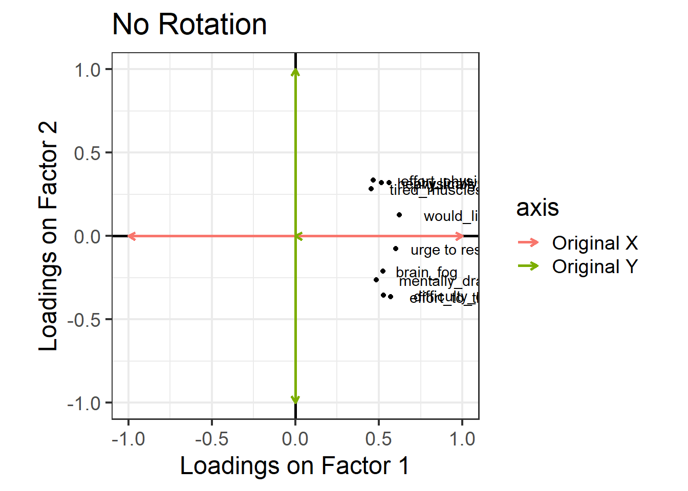
Now, let’s see what happens if we rotate these axes, as in Figure 3. Tilt your head 45 degrees to the right to understand this plot: the dashed purple line is the new y axis (the new “vertical”), and the dashed cyan line is the new x axis (the new “horizontal”). Now, the physical fatigue variables are high on the purple axis, while the mental fatigue variables are high on the cyan axis. Thus, each axis can be more easily interpreted with respect to the variables that load highly on it. We have one factor that seems to represent mental fatigue + sleepiness, and another factor that seems to represent physical fatigue + sleepiness.
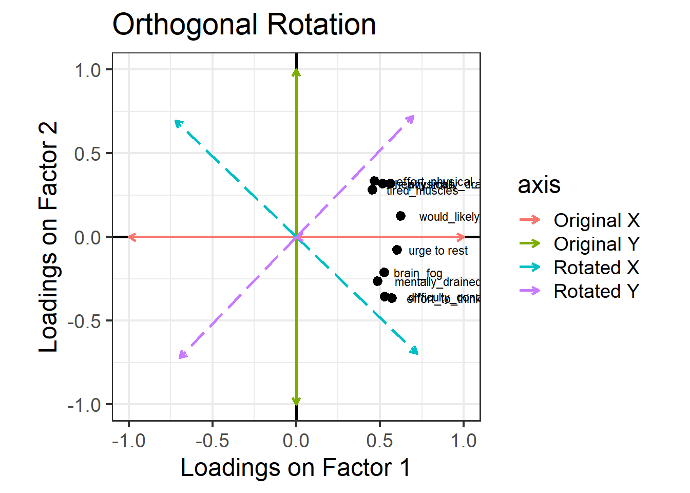
The total variance explained by this rotated solution is just the same as our unrotated solution. We can see this when we run the following R code, where the “varimax” rotation gives us the orthogonal rotation visualised above. Before, the cumulative variance explained after two factors was 0.366 (you can scroll up to double-check), and below, we see that the cumulative variance explained after two factors is still 0.366, even with the rotation. This number tells us that together, these two factors capture 36.6% of the total variance in our data.
tired_fa2 <- fa(tiredq, nfactors=2, rotate = "varimax", fm="ml")
print(tired_fa2$loadings, cutoff = .3)
Loadings:
ML1 ML2
difficulty_concentrating 0.625
mentally_drained 0.530
brain_fog 0.525
effort_to_think 0.663
tired_muscles 0.519
physically_drained 0.619
heavy limbs 0.589
effort_physical_tasks 0.564
would_likely_sleep 0.359 0.523
urge to rest 0.484 0.362
ML1 ML2
SS loadings 1.833 1.820
Proportion Var 0.183 0.182
Cumulative Var 0.183 0.365Look at the orthogonal rotation plot (Figure 3) again. When two lines are orthogonal, they are at 90 degrees to one another—that’s what “orthogonal” means. Our starting X and Y axes were orthogonal to one another, and when we choose an orthogonal rotation, our new axes are still orthogonal to one another.
Requiring that the axes be orthogonal means that we’re insisting that there is no correlation between the two factors. In other words, we assume that if someone is high on the mental fatigue dimension, we would have absolutely no idea whether they’re high or low on the physical fatigue dimension. But this feels weird! Surely we’d expect mental and physical fatigue to be correlated?
We can allow factors to be correlated by relaxing the constraint about orthogonal axes. Instead of choosing an orthogonal rotation, we use what’s called an “oblique rotation”. In R code, this means choosing the rotation method “oblimin”. The idea is much the same as the “orthogonal rotation” above, but we don’t have to keep the right angle between the factors:
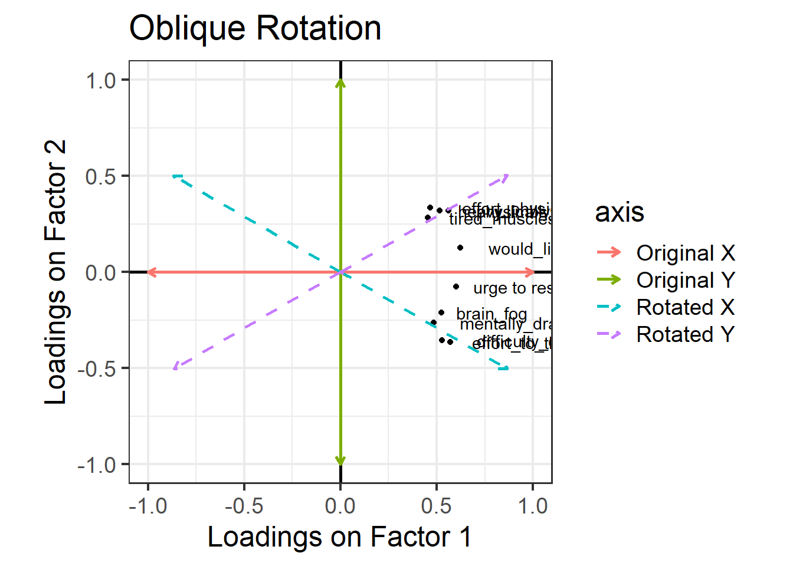
The pattern of factor loadings that emerges now is a lovely clean structure! Each variable is clearly linked to one factor and not as much to the other: for each item, there is only one loading above our cutoff of 0.3. And we’ve let the factors be correlated – so for someone who is high on factor 1 (which now looks like the ‘physical fatigue’ factor) we would also expect them to be high on factor 2 (‘mental fatigue’).
tired_fa3 <- fa(tiredq, nfactors=2, rotate = "oblimin", fm="ml")
print(tired_fa3$loadings, cutoff = .3)
Loadings:
ML2 ML1
difficulty_concentrating 0.659
mentally_drained 0.541
brain_fog 0.515
effort_to_think 0.693
tired_muscles 0.545
physically_drained 0.642
heavy limbs 0.617
effort_physical_tasks 0.602
would_likely_sleep 0.486
urge to rest 0.423
ML2 ML1
SS loadings 1.773 1.710
Proportion Var 0.177 0.171
Cumulative Var 0.177 0.348In this situation, we also get out the correlation between the factors.4 We can extract the specific values using:
tired_fa3$Phi ML2 ML1
ML2 1.0000000 0.4968943
ML1 0.4968943 1.0000000Rotations & Simple Structures
The idea of rotations in EFA is ultimately to help us get to a solution that “makes more sense”.
Important Note: “makes more sense” here is largely a theory driven idea. We need to think whether the proposed sets of factor loadings fit with what we know about the variables (how they’re worded etc) and the underlying construct that we are trying to measure.
In the discussion of rotations above, we talked about a ‘cleaner’ solution - where each variable tends to have one high loading and the other loadings are small. In essence we are trying to make a pattern that looks a bit like this, in diagrammatic form:
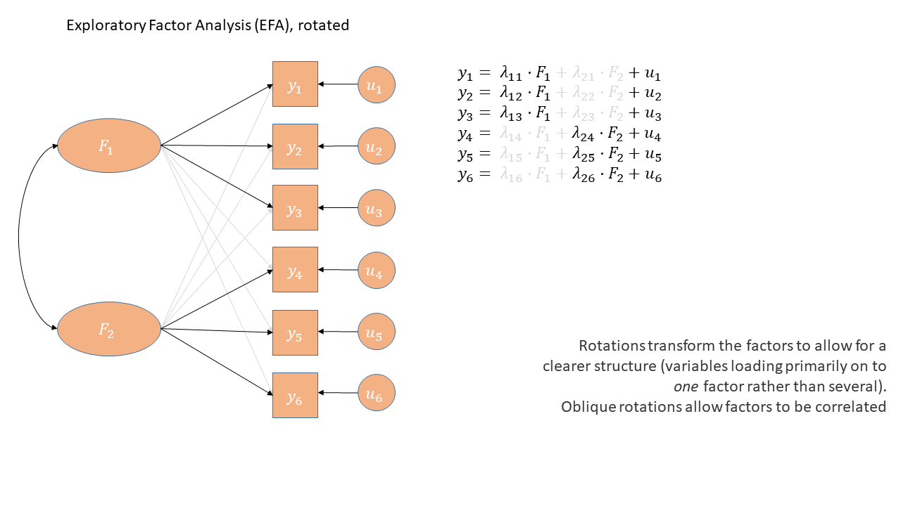
This idea is typically referred to as a “simple structure”, where each variable is “univocal” (it speaks to one factor only, and not to the others). This simplifies the interpretation of factors, making them more distinct and more easily understandable.
| type | common methods | what happens |
|---|---|---|
| no rotation | rotate = “none” | Tries to maximise loadings on to the first factor |
| orthogonal rotation | rotate = “varimax” | Keeping factors uncorrelated (orthogonal), tries to maximise the variance of loadings (i.e. have lots of high loadings and lots of low loadings) |
| oblique rotation | rotate = “oblimin” rotate = “promax” |
Tries to find a balance between a simple factor structure and the degree of correlation between factors |
Optional: Explanation with matrices
Our starting point is, again “outcome = model + error”, and here we remember that the outcome is the correlation matrix, the model is the factor loadings, and the error is the ‘uniqueness’ of each observed variable:
\[\begin{align} \color{red} \text{Correlation Matrix} &= \color{blue} \text{Factor Loadings}^2 \,+\, \color{magenta} \text{Uniqueness} \\ \end{align}\]
It’s going to be horrendous trying to see it with 10 items, so let’s pretend we have observed five variables, meaning we have a 5x5 correlation matrix, and we’re extracting two factors, so we have two columns of factor loadings. Our original, un-rotated solution is this:
\[\begin{align} \color{red} \text{Correlation Matrix} &= \color{blue} \mathbf{\Lambda}\mathbf{\Lambda'} \,+\, \color{magenta} \text{Uniqueness} \\ &= \color{blue} \begin{bmatrix} 0.64 & -0.29 \\ 0.70 & -0.25 \\ 0.73 & -0.14 \\ 0.33 & 0.49 \\ 0.42 & 0.73 \\ \end{bmatrix} \begin{bmatrix} 0.64 & 0.70 & 0.73 & 0.33 & 0.42 \\ -0.29 & -0.25 & -0.14 & 0.49 & 0.73 \\ \end{bmatrix} \,+\, \color{magenta} \text{Uniqueness} \\ &= \color{blue} \begin{bmatrix} 0.49 & 0.52 & 0.51 & 0.07 & 0.05 \\ 0.52 & 0.56 & 0.55 & 0.11 & 0.11 \\ 0.51 & 0.55 & 0.56 & 0.17 & 0.20 \\ 0.07 & 0.11 & 0.17 & 0.35 & 0.50 \\ 0.05 & 0.11 & 0.20 & 0.50 & 0.71 \\ \end{bmatrix} \,+\, \color{magenta} \text{Uniqueness} \end{align}\]
But as it happens, there are infinitely many sets of numbers that we could put in and get out the same values when we do \(\mathbf{\Lambda}\mathbf{\Lambda'}\). Or, if we want to include an additional matrix in our model that specifies how the factors are correlated (we’ll call it \(\mathbf{\Phi}\)), then we have infinitely (again) many more set of values that are numerically equivalent models:
Original factor model:
\[
\begin{align}
\color{red} \text{Correlation Matrix} &= \color{blue} \mathbf{\Lambda}\mathbf{\Lambda'} \,+\, \color{magenta} \text{Uniqueness} \\
\end{align}
\] Orthogonally rotated:
\[
\begin{align}
\color{red} \text{Correlation Matrix} &= \color{blue} \mathbf{\Lambda_{orth}}\mathbf{\Lambda_{orth}'} \,+\, \color{magenta} \text{Uniqueness} \\
\end{align}
\]
Obliquely rotated: \[ \begin{align} \color{red} \text{Correlation Matrix} &= \color{blue} \mathbf{\Lambda_{obl}}\mathbf{\Phi}\mathbf{\Lambda_{obl}'} \,+\, \color{magenta} \text{Uniqueness} \\ \end{align} \]
As an example, we could use a different set of values \(\mathbf{\Lambda_{orth}}\) instead of our original \(\mathbf{\Lambda}\) and achieve the same model
\[\begin{align} \color{red} \text{Correlation Matrix} &= \color{blue} \mathbf{\Lambda_{orth}}\mathbf{\Lambda_{orth}'} \,+\, \color{magenta} \text{Uniqueness} \\ &= \color{blue} \begin{bmatrix} 0.70 & 0.01 \\ 0.74 & 0.08 \\ 0.72 & 0.19 \\ 0.08 & 0.59 \\ 0.06 & 0.84 \\ \end{bmatrix} \begin{bmatrix} 0.70 & 0.74 & 0.72 & 0.08 & 0.06 \\ 0.01 & 0.08 & 0.19 & 0.59 & 0.84 \\ \end{bmatrix} \,+\, \color{magenta} \text{Uniqueness} \\ &= \color{blue} \begin{bmatrix} 0.49 & 0.52 & 0.51 & 0.07 & 0.05 \\ 0.52 & 0.56 & 0.55 & 0.11 & 0.11 \\ 0.51 & 0.55 & 0.56 & 0.17 & 0.20 \\ 0.07 & 0.11 & 0.17 & 0.35 & 0.50 \\ 0.05 & 0.11 & 0.20 & 0.50 & 0.71 \\ \end{bmatrix} \,+\, \color{magenta} \text{Uniqueness} \end{align}\]
Or a set of numbers \(\mathbf{\Lambda_{obl}}\) but also specifying the factor correlations \(\mathbf{\Phi}\) we can get to the exact same model again:
\[\begin{align} \color{red} \text{Correlation Matrix} &= \color{blue} \mathbf{\Lambda_{obl}}\mathbf{\Phi}\mathbf{\Lambda_{obl}'} \,+\, \color{magenta} \text{Uniqueness} \\ &= \color{blue} \begin{bmatrix} 0.71 & -0.08 \\ 0.75 & -0.02 \\ 0.72 & 0.10 \\ 0.04 & 0.58 \\ -0.01 & 0.85 \\ \end{bmatrix} \begin{bmatrix} 1.00 & 0.21 \\ 0.21 & 1.00 \\ \end{bmatrix} \begin{bmatrix} 0.71 & 0.75 & 0.72 & 0.04 & -0.01 \\ -0.08 & -0.02 & 0.10 & 0.58 & 0.85 \\ \end{bmatrix} \,+\, \color{magenta} \text{Uniqueness} \\ &= \color{blue} \begin{bmatrix} 0.49 & 0.52 & 0.51 & 0.07 & 0.05 \\ 0.52 & 0.56 & 0.55 & 0.11 & 0.11 \\ 0.51 & 0.55 & 0.56 & 0.17 & 0.20 \\ 0.07 & 0.11 & 0.17 & 0.35 & 0.50 \\ 0.05 & 0.11 & 0.20 & 0.50 & 0.71 \\ \end{bmatrix} \,+\, \color{magenta} \text{Uniqueness} \end{align}\]
For each of these different possible sets of numbers that we could use to be numerically identical, we could write them in terms of our original numbers \(\mathbf{\Lambda}\) and multiplying it by some matrix \(\mathbf{T}\). So we could write:
\[ \begin{align} \color{blue} \mathbf{\Lambda_{new}} &= \color{blue} \mathbf{\Lambda_{original}}\mathbf{T} \end{align} \]
So our “model” here could be written as \(\mathbf{(\Lambda T)(\Lambda T)'}\). This simplifies to \(\mathbf{\Lambda (T T') \Lambda'}\). The difference between orthogonal and oblique rotations comes in how this transformation matrix \(\mathbf{T}\) works - if \(\mathbf{TT'}\) results in the identity matrix \(\begin{bmatrix} 1 & 0 \\ 0 & 1 \\ \end{bmatrix}\), then this doesn’t change the perpendicularity of our factors. If it doesn’t, then we need to also include the correlation of the factors (\(\mathbf{\Phi}\)) in our model.
The fa() Output
Now that we’ve got a rough sense of the idea of factor analysis and rotations, we can take a closer look at the output that we get in R.
we can simply print the name of our model in order to see a lot of information. Below are a series of slides (the full deck as a .pdf is here if you want it) that step-by-step talk through each part of the output of an EFA.
Pattern Matrix
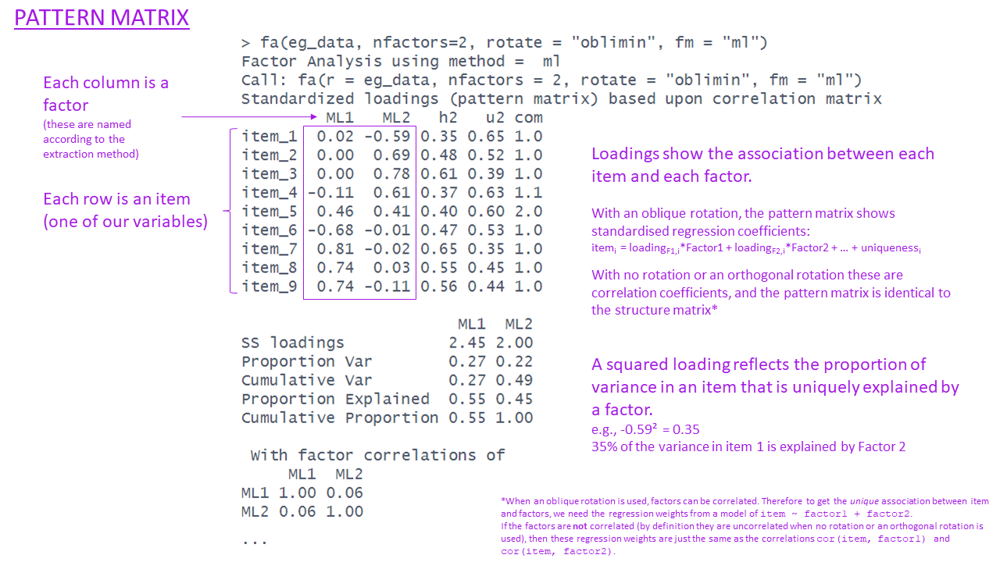
Communalities
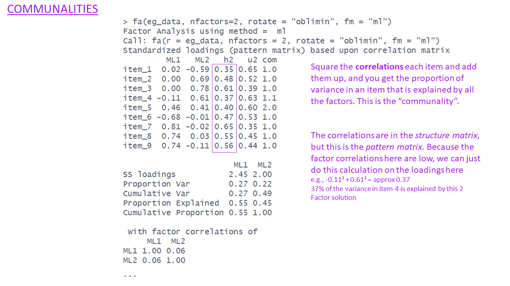
Uniqueness
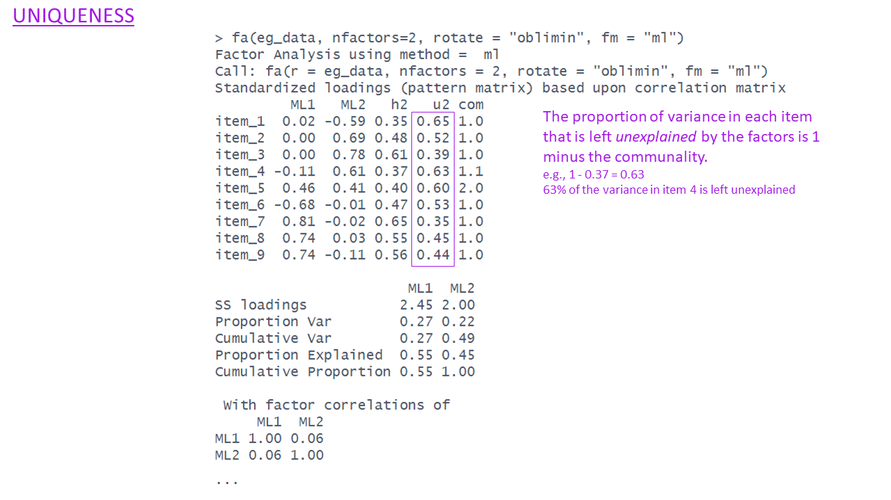
Complexities
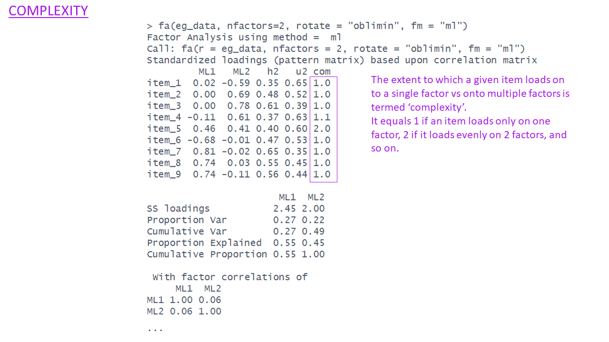
SS loadings & Variance Accounted for
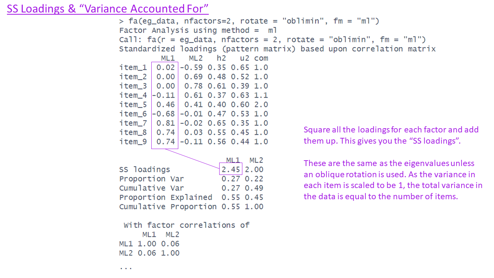
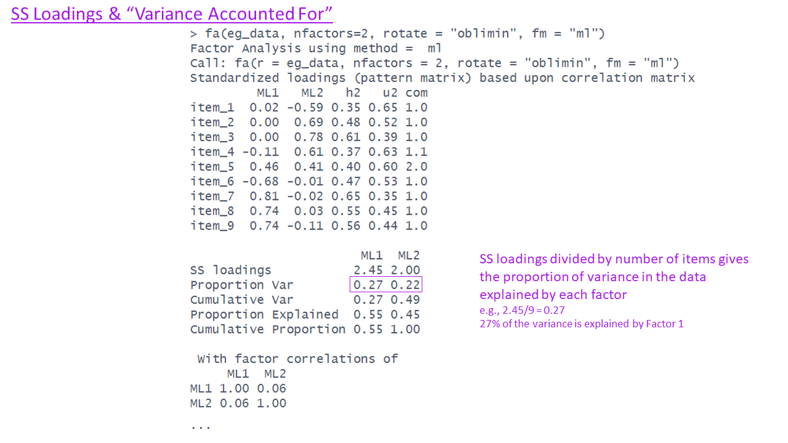
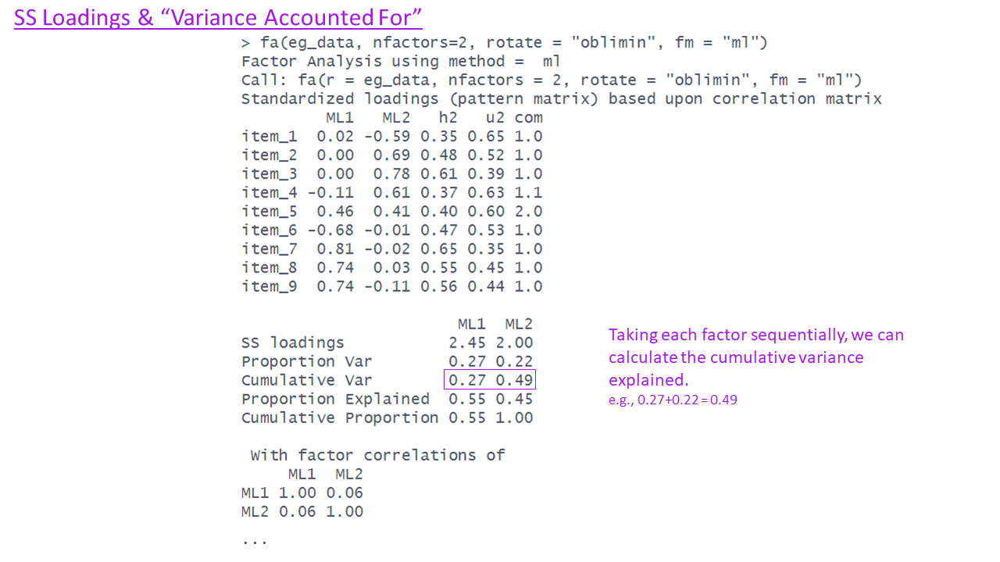
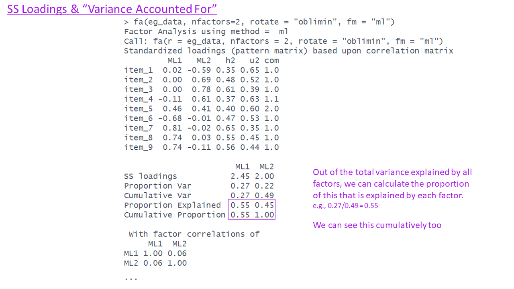
Factor Correlations
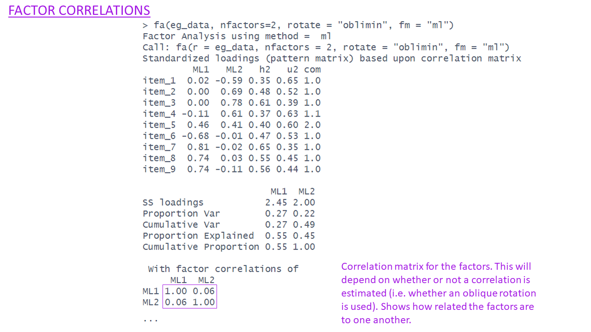
Optional Extras: Fit indices etc.
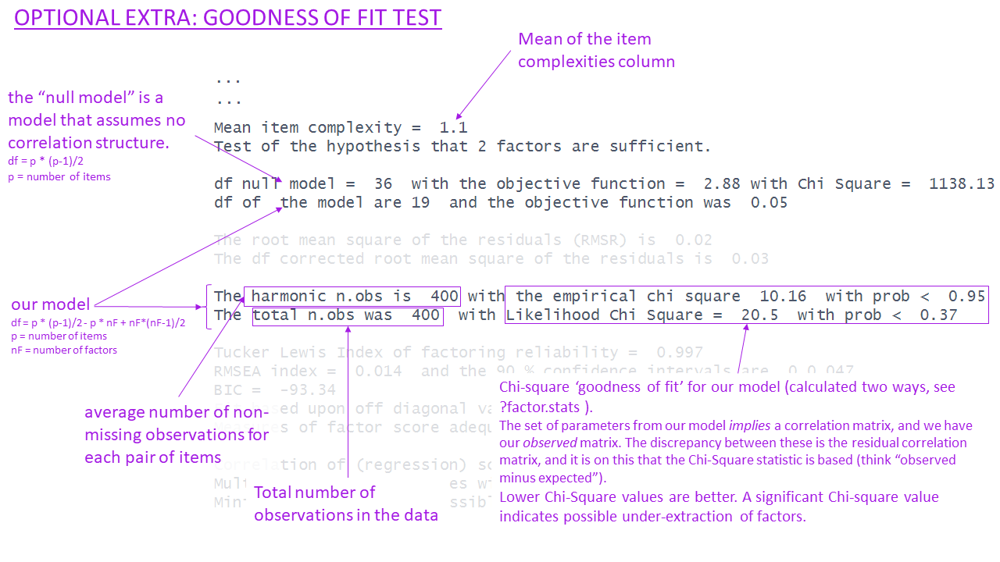
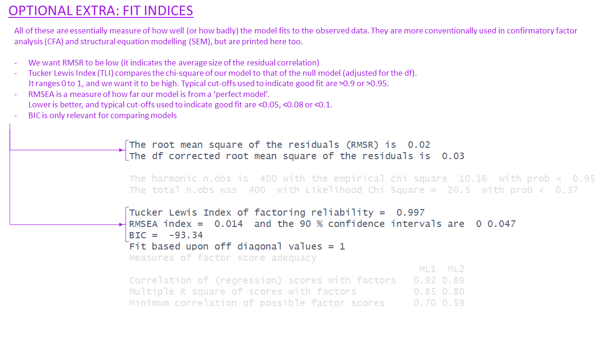
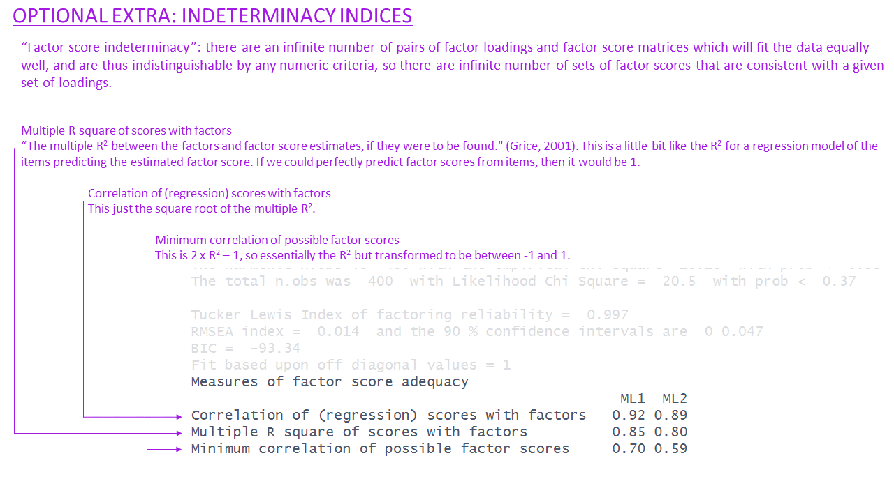
What makes a good factor solution?
Recall again the rough steps of EFA we introduced earlier. Note that this exploratory method will typically involve fitting multiple EFA models for a range of possibly numbers of factors, and then comparing and evaluating them with regards to which is most theoretically coherent.
The process of EFA:
- check suitability of items
- decide on appropriate rotation and factor extraction method
- examine plausible number of factors
- based on 3, choose the range to examine from \(n_{min}\) factors to \(n_{max}\) factors
- do EFA, extracting from \(n_{min}\) to \(n_{max}\) factors. Compare each of these ‘solutions’ in terms of structure, variance explained, and — by examining how the factors from each solution relate to the observed items — assess how much theoretical sense they make.
- if the aim is to develop a measurement tool for future use - consider removing “problematic” items and start over again.
There are various sets of criteria proposed to set out what makes a certain factor solution “theoretically coherent”.
Ultimately, a big part of it is subjective, and based on what we know about the observed variables (e.g., if it’s a questionnaire, then our interpretation of the wording of each question is key here). However, there are some key things to consider that relate to the utility of a factor solution:
- how much variance is accounted for by a solution?
- this is a good starting point as it shows us an overall metric of how much the factor(s) are actually capturing something that is meaningfully shared between the items.
- more variance in the items explained by the solution is better, but more factors will always explain more variance.
- do all factors load on 3+ items at a “salient” level?
- “salient” here is somewhat arbitrary, but convention uses loadings that are \(>0.3\) or \(<-0.3\)
- we want our factors to be meaningful things that don’t simply represent the same thing as a single variable. If a factor has only 1 item that loads very highly on to it, and all other item loadings are small, then that factor is really just capturing a very similar thing to the observed item.
- do all items have at least one loading at a salient level?
- we want our solution to capture the full breadth of our measurement tool - i.e. all aspects of our construct. So we ideally want each item to be related to at least one factor.
- depending on our purpose here, an item that doesn’t have a high loading could point us to look at the item in more detail, and think about why it is doing something different. If we are developing a measurement tool then we may even decide that the item was badly worded, and we could drop it from the analysis and start over with the process on the subset of items.
- are there any highly complex items?
- we ideally want items to be linked mainly to one factor and not to others. If an item loads across multiple factors, then we say that item is “complex”. This isn’t necessarily a problem per se, but it can make it harder to define exactly what our factors represent.
- we ideally want items to be linked mainly to one factor and not to others. If an item loads across multiple factors, then we say that item is “complex”. This isn’t necessarily a problem per se, but it can make it harder to define exactly what our factors represent.
- are there any “Heywood cases” (communalities or standardised loadings that are >1)?
- this can happen if we use maximum likelihood as an estimation technique, and we should check for these because they reflect that the solution may fit well numerically, but make absolutely no sense (you can’t have correlations >1).
- this can happen if we use maximum likelihood as an estimation technique, and we should check for these because they reflect that the solution may fit well numerically, but make absolutely no sense (you can’t have correlations >1).
- is the factor structure (items that load on to each factor) coherent, and does it make theoretical sense?
- this is possibly the biggest question. Broadly speaking, it is asking “can you give a name to each factor?”. It requires us looking at the item wordings carefully and considering how they are grouped in loadings on to each factor. This is the fun bit!
Demonstration: EFA in practice
Dataset: phoneaddiction.csv
The dataset at https://uoepsy.github.io/data/phoneaddiction.csv comes from a (fake) study that is interested in developing a measure of “phone-attachment/addiction” - i.e., the idea of being overly attached to a phone.
We have a set of 10 statements (Table 1) that get at different aspects of this idea, and we asked 240 people to rate how much they agreed with each of the 10 statements on a 1-5 scale (1 = strongly disagree, 5 = strongly agree).
phdat <- read_csv("https://uoepsy.github.io/data/phoneaddiction.csv")| variable | question |
|---|---|
| item1 | I often reach for my phone even when I don't have a specific reason to use it. |
| item2 | I feel a strong urge to check my phone frequently, even during meals or social interactions. |
| item3 | I spend a large portion of my day using my phone, often for more hours than I intend. |
| item4 | My phone use has interfered with my ability to complete tasks or responsibilities at school, work, or home. |
| item5 | When I cannot use my phone (e.g., no battery or no signal), I feel anxious or uncomfortable. |
| item6 | My phone use has negatively affected my sleep schedule, such as staying up late scrolling. |
| item7 | I find it difficult to avoid checking my phone immediately upon waking up or right before bed. |
| item8 | I often check my phone even in situations where it's distracting or socially inappropriate (e.g., meetings or classes). |
| item9 | I sometimes feel that others are overly concerned about my phone use in social situations. |
| item10 | I have tried to reduce my phone usage but find it challenging to do so. |
1. Initial checks
There are various ways of assessing the suitability of our items for exploratory factor analysis, and most of them rely on examining the observed correlations between items.
Look at the correlation matrix
Use a function such as cor or corr.test(data) (from the psych package) to create the correlation matrix. If it’s a big matrix (they get big quite quickly!) then we can make some sort of visual to get a better sense.
phoneaddiction.csv example:
Most of the correlations are in the range from 0.2 to 0.4. So they aren’t hugely strong correlations, but they are all related. From the plot below item9 already looks to be a weird one, which is something to keep in mind.
library(pheatmap)
pheatmap(cor(phdat), cluster_rows = F, cluster_cols = F)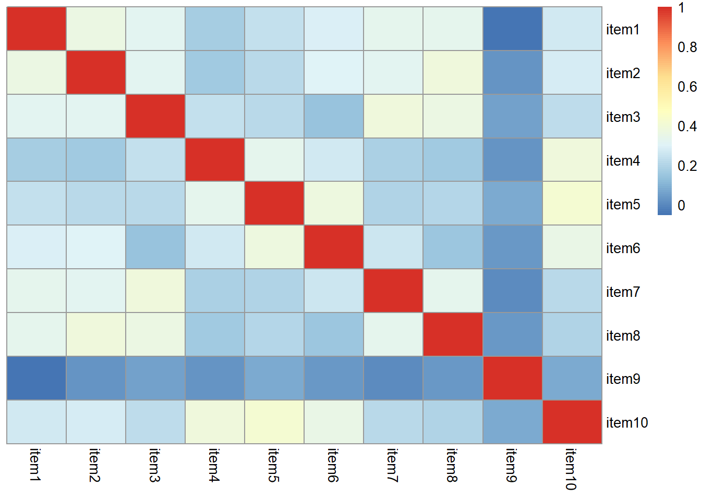
optional: what if our variables are not continuous?
In psychological research, we spend a lot of time recording responses on a Likert scale (e.g.: “strongly disagree”,“disgree”,“neither”,“agree”,“strongly agree”).
If our measurements have 5+ Likert-like options, it is quite common convention to simply treat them as continuous variables.
But if we have fewer response options (or if people only ever used fewer options), then we don’t want to just use a standard Pearson’s correlation in order to capture the relationships.
Instead we would want to use polychoric correlations, which we can get out the polychoric() function
library(psych)
# get a matrix of polychoric correlations:
polychoric(data)$rhoAnd we can easily then conduct the factor analysis by adding cor = "poly" into the use of the fa() function.
fa(data, nfactors = ??, fm = ??,
rotate = ??, cor = "poly")“Polychoric correlations” are estimates of the correlation between two theorized normally distributed continuous variables, based on their observed ordinal manifestations.
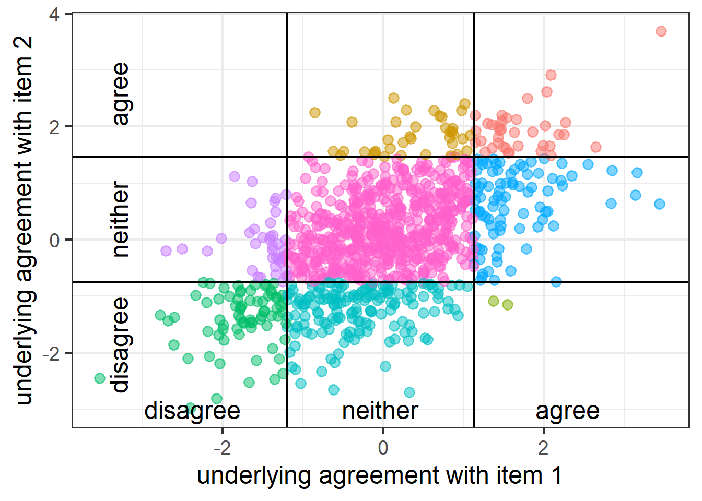
Bartlett’s Test
The function cortest.bartlett(cor(data), n = nrow(data)) conducts “Bartlett’s test”. This tests against the null that the correlation matrix is proportional to the identity matrix (a matrix of all 0s except for 1s on the diagonal).
- Null hypothesis: observed correlation matrix is equivalent to the identity matrix
- Alternative hypothesis: observed correlation matrix is not equivalent to the identity matrix.
What is the identity matrix?
The “Identity matrix” is a matrix of all 0s except for 1s on the diagonal.
e.g. for a 3x3 matrix:
\[
\begin{bmatrix}
1 & 0 & 0 \\
0 & 1 & 0 \\
0 & 0 & 1 \\
\end{bmatrix}
\] If a correlation matrix looks like this, then it means there is no shared variance between the items, so it is not suitable for factor analysis.
phoneaddiction.csv example:
The Bartlett test is significant here, meaning that we reject the null hypothesis that our correlation matrix is equivalent to the identity matrix.
This is a good thing - we want it to be different in order to justify doing factor analysis.
cortest.bartlett(phdat)$chisq
[1] 408.3897
$p.value
[1] 4.531271e-60
$df
[1] 45
Kaiser, Meyer, Olkin Measure of Sampling Adequacy
You can check the “factorability” of the correlation matrix using KMO(data) (also from psych!).
- Rules of thumb:
- \(0.8 < MSA < 1\): the sampling is adequate
- \(MSA <0.6\): sampling is not adequate
- \(MSA \sim 0\): large partial correlations compared to the sum of correlations. Not good for FA
Kaiser’s suggested cuts
These are Kaiser’s corresponding adjectives suggested for each level of the KMO:
- 0.00 to 0.49 “unacceptable”
- 0.50 to 0.59 “miserable”
- 0.60 to 0.69 “mediocre”
- 0.70 to 0.79 “middling”
- 0.80 to 0.89 “meritorious”
- 0.90 to 1.00 “marvelous”
phoneaddiction.csv example:
Overall KMO is good here at 0.83, and individual item KMOs are also looking pretty ‘meritorious’ too! The only thorny one is item9, again!
KMO(phdat)Kaiser-Meyer-Olkin factor adequacy
Call: KMO(r = phdat)
Overall MSA = 0.83
MSA for each item =
item1 item2 item3 item4 item5 item6 item7 item8 item9 item10
0.86 0.85 0.83 0.82 0.83 0.81 0.85 0.83 0.53 0.82
Check for linearity
It also makes sense to check for linearity of relationships prior to conducting EFA. EFA is all based on correlations, which assume the relations we are capturing are linear.
You can check linearity of relations using pairs.panels(data) (also from psych), and you can view the histograms on the diagonals, allowing you to check univariate normality (which is usually a good enough proxy for multivariate normality).
phoneaddiction.csv example:
Because these items are measured on likert scales of 1-5, looking at scatterplots can be a bit harder. The red lines on the plots are essentially “smooth” lines, which follow the mean of the variable on the y-axis as it moves across the x-axis. So we want them to all be straight-ish, which they are. We can see from the diagonals of this plot that the items are all fairly normally distributed too.
pairs.panels(phdat)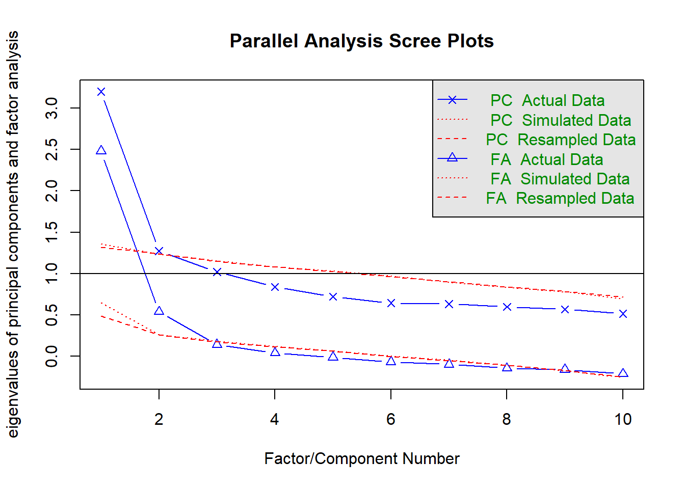
2. Rotations and Factor Extraction
Rotations: If we are thinking that there might be two or more factors that underly our measure of ‘phone-addiction’, then we would probably expect those two factors to be correlated (all the questions are about phone usage, after all). For that reason, we are going to use an oblique rotation.5
Factor extraction: As all of the correlations between individual items are low to medium (0.2 - 0.4), and the item distributions look fairly normal, we’re going to opt to use maximum likelihood here.
3 & 4. How many factors?
The question of how many factors to extract is very similar to the methods discussed in the PCA demonstration in Chapter 2.
Scree plot
scree(phdat, pc = TRUE, factors = FALSE)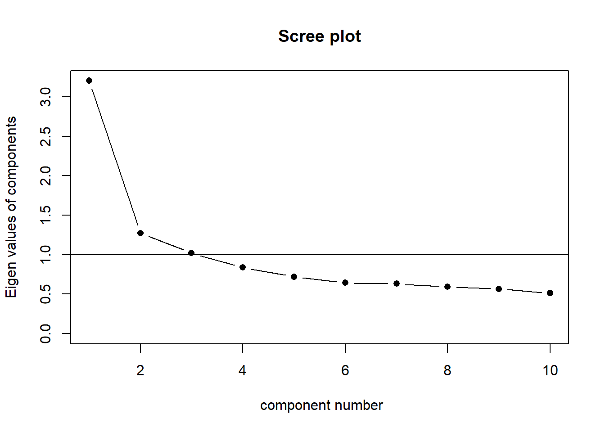
Parallel analysis
We can set fa = "both" to do the parallel analysis method for both factor extraction and principal components.
fa.parallel(phdat, fa = "both")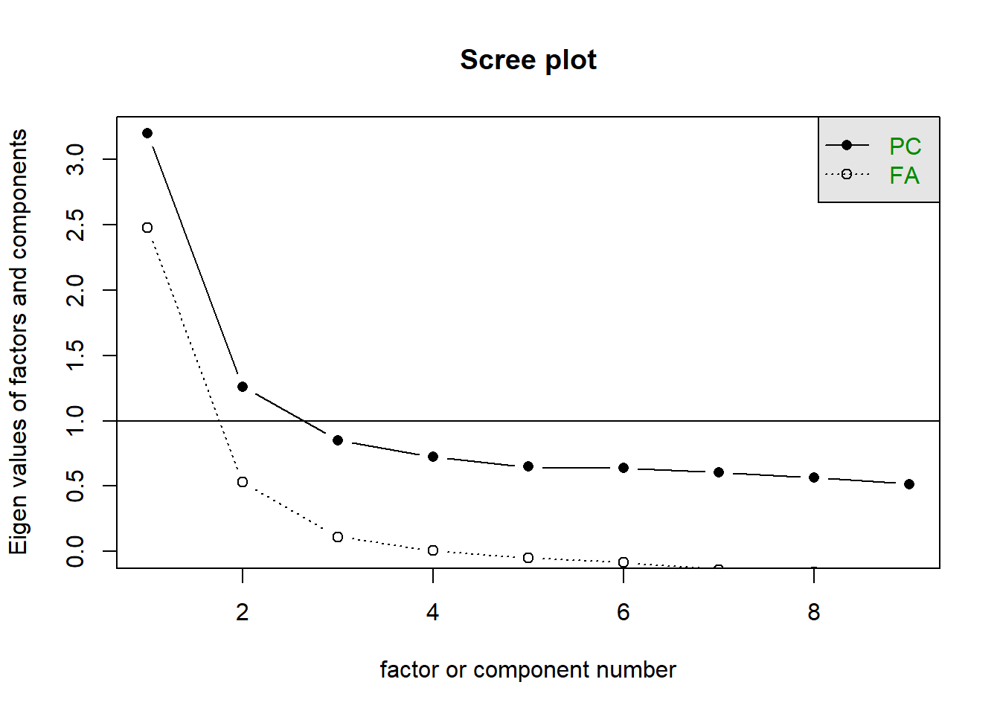
Parallel analysis suggests that the number of factors = 2 and the number of components = 1
MAP
VSS(phdat, rotate = "oblimin", plot = FALSE, fm = "ml")
Very Simple Structure
Call: vss(x = x, n = n, rotate = rotate, diagonal = diagonal, fm = fm,
n.obs = n.obs, plot = plot, title = title, use = use, cor = cor)
VSS complexity 1 achieves a maximimum of 0.61 with 1 factors
VSS complexity 2 achieves a maximimum of 0.59 with 3 factors
The Velicer MAP achieves a minimum of 0.02 with 1 factors
BIC achieves a minimum of -122.63 with 2 factors
Sample Size adjusted BIC achieves a minimum of -40.21 with 2 factors
Statistics by number of factors
vss1 vss2 map dof chisq prob sqresid fit RMSEA BIC SABIC complex
1 0.61 0.00 0.023 35 7.5e+01 9.9e-05 6.2 0.61 0.069 -117 -5.9 1.0
2 0.57 0.59 0.031 26 2.0e+01 8.0e-01 6.6 0.59 0.000 -123 -40.2 1.0
3 0.56 0.59 0.061 18 8.9e+00 9.6e-01 6.0 0.62 0.000 -90 -32.7 1.3
4 0.42 0.53 0.087 11 4.5e+00 9.5e-01 7.2 0.54 0.000 -56 -20.9 1.4
5 0.47 0.58 0.121 5 1.4e+00 9.3e-01 6.2 0.61 0.000 -26 -10.2 1.3
6 0.49 0.55 0.175 0 2.9e-01 NA 6.0 0.62 NA NA NA 1.4
7 0.37 0.41 0.279 -4 6.6e-08 NA 7.9 0.50 NA NA NA 1.6
8 0.34 0.39 0.493 -7 6.1e-12 NA 8.2 0.48 NA NA NA 1.6
eChisq SRMR eCRMS eBIC
1 1.0e+02 6.8e-02 0.077 -91
2 2.0e+01 3.0e-02 0.040 -123
3 8.2e+00 1.9e-02 0.031 -90
4 5.1e+00 1.5e-02 0.031 -55
5 1.1e+00 7.1e-03 0.021 -26
6 2.3e-01 3.3e-03 NA NA
7 6.1e-08 1.7e-06 NA NA
8 5.5e-12 1.6e-08 NA NA| method | suggestion |
|---|---|
| kaiser | 3 |
| scree plot | 1 or 2? or 5? quite hard to tell |
| MAP | 1 |
| parallel analysis | 2 |
From this I would say that it is worth considering both a 1 factor and a 2 factor solution.
5. Doing EFA & Comparing solutions
ph_efa1 <- fa(phdat, nfactors = 1,
fm = "ml")
ph_efa2 <- fa(phdat, nfactors = 2,
fm = "ml", rotate = "oblimin")Both solutions look reasonable apart from item 9 (which we could have guessed right at the beginning).
In both solutions, item 9 has smaller loadings than the other items. The smaller the loading, the less well the item is targeting whatever construct the factor represents.
1 factor solution
print(ph_efa1$loadings, cutoff=.2)
Loadings:
ML1
item1 0.559
item2 0.574
item3 0.529
item4 0.439
item5 0.511
item6 0.501
item7 0.531
item8 0.519
item9
item10 0.548
ML1
SS loadings 2.481
Proportion Var 0.2482 factor solution
print(ph_efa2$loadings, cutoff=.2)
Loadings:
ML1 ML2
item1 0.525
item2 0.556
item3 0.580
item4 0.536
item5 0.633
item6 0.512
item7 0.569
item8 0.655
item9
item10 0.677
ML1 ML2
SS loadings 1.681 1.441
Proportion Var 0.168 0.144
Cumulative Var 0.168 0.312ph_efa2$Phi ML1 ML2
ML1 1.0000000 0.5777785
ML2 0.5777785 1.0000000Looking at item9, the wording is “I sometimes feel that others are overly concerned about my phone use in social situations.” This maybe represents something slightly different from just “being addicted to your phone” - it also contains a self-consciousness / feeling judged by others etc, which is something completely different.
So where have we got to? We started with loads of responses to a set of 10 questions, and we wanted to understand the underlying structure of the thing they were intended to measure (“phone addiction”).
We’ve ended by identifying one question that didn’t really fit with the rest (item9), and with a question mark between whether the measures capture 2 underlying factors or just 1.
A lot of where we go next depends on what our overarching research aims are. If we want to use the construct “phone-addiction” in a subsequent analysis, then we’ll need to extract scores, and we have a decision of what structure (1 factor or 2 factors) we want to use - and so how many scores each person will have.
6 - are we developing a measurement tool?
If our goal here is to design a nice questionnaire for future research that captures stuff about people’s addiction to their phones, then item 9 isn’t proving very useful here. At this point we may also want to consider if there are any other items that are maybe redundant (it’s always good to try and keep a questionnaire short to reduce participant burden!).
Removing item9, and doing the entire process over again, we end up still finding that it’s between a 1 or a 2 factor solution.
determining the number of factors
scree(phdat[,-9])
fa.parallel(phdat, fa = "both")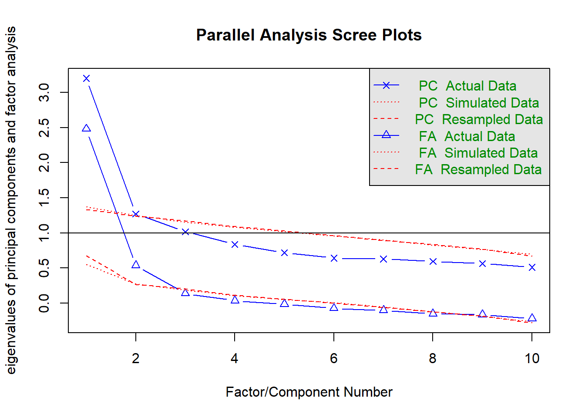
Parallel analysis suggests that the number of factors = 2 and the number of components = 1 VSS(phdat, rotate = "oblimin", plot = FALSE, fm = "ml")
Very Simple Structure
Call: vss(x = x, n = n, rotate = rotate, diagonal = diagonal, fm = fm,
n.obs = n.obs, plot = plot, title = title, use = use, cor = cor)
VSS complexity 1 achieves a maximimum of 0.61 with 1 factors
VSS complexity 2 achieves a maximimum of 0.59 with 3 factors
The Velicer MAP achieves a minimum of 0.02 with 1 factors
BIC achieves a minimum of -122.63 with 2 factors
Sample Size adjusted BIC achieves a minimum of -40.21 with 2 factors
Statistics by number of factors
vss1 vss2 map dof chisq prob sqresid fit RMSEA BIC SABIC complex
1 0.61 0.00 0.023 35 7.5e+01 9.9e-05 6.2 0.61 0.069 -117 -5.9 1.0
2 0.57 0.59 0.031 26 2.0e+01 8.0e-01 6.6 0.59 0.000 -123 -40.2 1.0
3 0.56 0.59 0.061 18 8.9e+00 9.6e-01 6.0 0.62 0.000 -90 -32.7 1.3
4 0.42 0.53 0.087 11 4.5e+00 9.5e-01 7.2 0.54 0.000 -56 -20.9 1.4
5 0.47 0.58 0.121 5 1.4e+00 9.3e-01 6.2 0.61 0.000 -26 -10.2 1.3
6 0.49 0.55 0.175 0 2.9e-01 NA 6.0 0.62 NA NA NA 1.4
7 0.37 0.41 0.279 -4 6.6e-08 NA 7.9 0.50 NA NA NA 1.6
8 0.34 0.39 0.493 -7 6.1e-12 NA 8.2 0.48 NA NA NA 1.6
eChisq SRMR eCRMS eBIC
1 1.0e+02 6.8e-02 0.077 -91
2 2.0e+01 3.0e-02 0.040 -123
3 8.2e+00 1.9e-02 0.031 -90
4 5.1e+00 1.5e-02 0.031 -55
5 1.1e+00 7.1e-03 0.021 -26
6 2.3e-01 3.3e-03 NA NA
7 6.1e-08 1.7e-06 NA NA
8 5.5e-12 1.6e-08 NA NA1 factor solution (excluding item 9)
ph_efa1a <- fa(phdat[,-9], nfactors = 1,
fm = "ml")
print(ph_efa1a$loadings, cutoff = .3)
Loadings:
ML1
item1 0.562
item2 0.574
item3 0.529
item4 0.439
item5 0.510
item6 0.500
item7 0.532
item8 0.519
item10 0.546
ML1
SS loadings 2.477
Proportion Var 0.2752 factor solution (excluding item 9)
ph_efa2a <- fa(phdat[,-9], nfactors = 2,
rotate = "oblimin", fm = "ml")
print(ph_efa2a$loadings, cutoff = .3)
Loadings:
ML1 ML2
item1 0.517
item2 0.554
item3 0.584
item4 0.538
item5 0.630
item6 0.518
item7 0.567
item8 0.658
item10 0.675
ML1 ML2
SS loadings 1.673 1.431
Proportion Var 0.186 0.159
Cumulative Var 0.186 0.345ph_efa2a$Phi ML1 ML2
ML1 1.0000000 0.5764527
ML2 0.5764527 1.0000000Finally, we now have a judgment call. Both solutions look okay in terms of the numbers of items on each factor etc. One thing to consider is whether we prefer the idea of 1 thing that explains 28% of the variance, or 2 related things (the two factors are fairly correlated in the 2 factor solution) that together explain 35%. Is that a big enough increase?
The other thing we should definitely be considering is the theoretical coherence of the solutions. The 1 factor solution is easy - we have just one factor, and that represents “addiction to your phone”.
In the 2 factor solution we need to pay more attention to which items go with which factor.
Given the item wordings below - we might try to define Factor 1 as “frequency of use” and Factor 2 as “impact on life”.
Are these distinct enough for you? Personally I would say maybe not - some of the wordings of items in Factor 1 are still related to “impact on life” (i.e., “often for more hours than I intend”?)
Factor 1
| variable | question |
|---|---|
| item1 | I often reach for my phone even when I don't have a specific reason to use it. |
| item2 | I feel a strong urge to check my phone frequently, even during meals or social interactions. |
| item3 | I spend a large portion of my day using my phone, often for more hours than I intend. |
| item7 | I find it difficult to avoid checking my phone immediately upon waking up or right before bed. |
| item8 | I often check my phone even in situations where it's distracting or socially inappropriate (e.g., meetings or classes). |
Factor 2
| variable | question |
|---|---|
| item4 | My phone use has interfered with my ability to complete tasks or responsibilities at school, work, or home. |
| item5 | When I cannot use my phone (e.g., no battery or no signal), I feel anxious or uncomfortable. |
| item6 | My phone use has negatively affected my sleep schedule, such as staying up late scrolling. |
| item10 | I have tried to reduce my phone usage but find it challenging to do so. |
Developing measurement instruments (often called “scale development”) is lot of back and forth, and at this point we might consider re-wording some of the items to make the two factors more clearly distinct, then giving the edited questionnaire to a whole load of new people, and going through the whole process again until we’re happy with a coherent structure!
Hold on, I want some scores?
After all the focus on trying to better understand the underlying structure of factors that are resulting in our observed responses, we have somewhat lost sight of the fact that this might all be in aid of some other purpose - trying to create a score for each person in our dataset for each of the factors!
Much like PCA (see Chapter 2), the scores from factor models will be taking into account the extent to which each individual observed variable might differently reflect the underlying factor. So this will contrast with naive mean/sum scores which assume each variable is equally reflective of the construct.
Unlike PCA, however, in factor analysis everything is indeterminate. Much like how we can have infinitely many sets of loadings (depend on how we rotate them) that are numerically indistinguishable in terms of the implied model, there are infinitely many sets of factor scores that we could create - we have “factor score indeterminacy”.
There are many various methods to estimated factor scores, and they will all combine the observed responses, the factor loadings, and the factor correlations.
We can get them all using the factor.scores() function. We need to give this function our data, our factor model, and tell it which method to use.
So let’s assume we want to use our 2 factor model of phone-addiction, and we are removing that problematic question 9.
ph_efa2a <- fa(phdat[,-9], nfactors = 2,
rotate = "oblimin", fm = "ml")For example, to extract factor scores using the Bartlett method:
factor.scores(phdat[,-9], ph_efa2a, method="Bartlett")$scores ML1 ML2
[1,] -0.3230252 -1.8648196
[2,] 0.5291383 0.8525636
[3,] -0.1012367 -0.1474142
[4,] 0.6964524 -0.3888752
[5,] -0.3261932 -0.6873995
[6,] -0.6963550 -0.8987366A brilliant paper by Skrondal & Laake6 suggests the following methods to be used depending on your eventual purpose:
- If the construct is going to be used as a dependent variable, use Bartlett (
method = "Bartlett")
- If the construct is going to be used as a predictor, use Thurstone (
method = "Thurstone")
- If the construct is a covariate, less important
Footnotes
In linear algebra terms, \(\mathbf{\Lambda}\) is a column vector and \(\mathbf{\Lambda'}\) is a row vector, and using matrix multiplication, their product \(\mathbf{\Lambda}\mathbf{\Lambda'}\) is a 3x3 matrix.↩︎
PCA (using eigendecomposition) is itself a method of extracting different dimensions from our data. But PCA isn’t really factor analysis, because factor analysis focuses on interpreting the factors we extract.↩︎
In fact, there are infinitely many kinds of transformations that we could apply that would all result in models which make identical predictions! This idea is called “rotational indeterminacy”.↩︎
If you’re a trigonometry fan (I’m not!), the correlation between factors is the cosine of the angle between the axes!↩︎
Even if these two factors are not correlated, then an oblique rotation could estimate that too. The point of an oblique rotation is that we’re not forcing the factors to be uncorrelated.↩︎
Skrondal, A., & Laake, P. (2001). Regression among factor scores. Psychometrika, 66, 563-575.↩︎